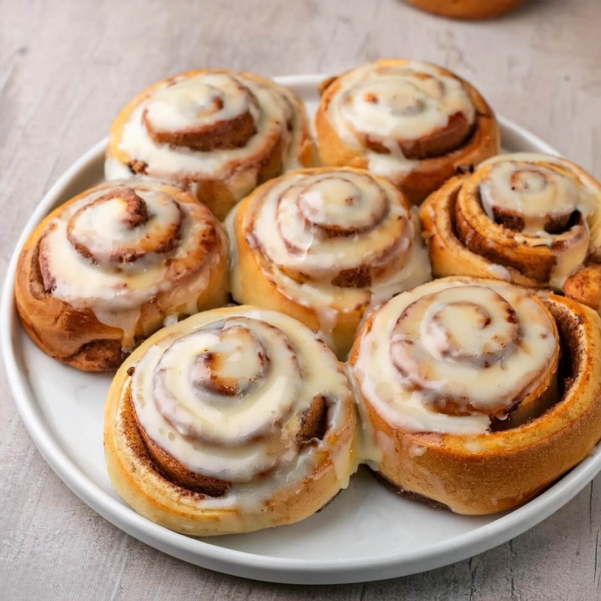

Cinnamon roll Recipe

Description
Cinnamon rolls are a sweet pastry commonly served in Northern Europe and North America. They are made by rolling a sheet of yeast-leavened dough with a cinnamon-sugar mixture.
The dough is then cut into individual portions and baked in a pan. Once baked, the rolls are topped with a sweet glaze or frosting.
Cinnamon rolls are often enjoyed for breakfast or as a dessert.
Ingredients
- For the dough:
- 1 cup warm milk (110°F)
- 2 1/2 teaspoons active dry yeast
- 1/2 cup granulated sugar
- 1/3 cup unsalted butter, melted
- 2 large eggs
- 1 teaspoon salt
- 4 1/2 cups all-purpose flour
- For the filling:
- 1 cup packed brown sugar
- 2 1/2 tablespoons ground cinnamon
- 1/3 cup unsalted butter, softened
- For the cream cheese frosting:
- 1/2 cup unsalted butter, softened
- 1/4 cup cream cheese, softened
- 1 1/2 cups powdered sugar
- 1/2 teaspoon vanilla extract
- 1/8 teaspoon salt
Steps
- In a small bowl, dissolve the yeast in the warm milk and let it sit for 5 minutes until foamy.
- In a large bowl, combine the sugar, butter, eggs, and salt. Add the flour and mix until a soft dough forms.
- Knead the dough on a floured surface for 5-7 minutes until smooth and elastic. Place the dough in a greased bowl, cover, and let it rise for 1 hour.
- Roll out the dough on a floured surface into a 16x21-inch rectangle. Spread the softened butter over the dough and sprinkle the cinnamon sugar mixture on top.
- Roll up the dough tightly and cut it into 12 equal pieces. Place the rolls in a greased 9x13-inch baking pan, cover, and let them rise for 30 minutes.
- Bake the rolls in a preheated 400°F oven for 15-20 minutes until golden brown.
- While the rolls are baking, prepare the cream cheese frosting by beating together the butter, cream cheese, powdered sugar, vanilla, and salt until smooth.
- Spread the frosting over the warm cinnamon rolls and serve.